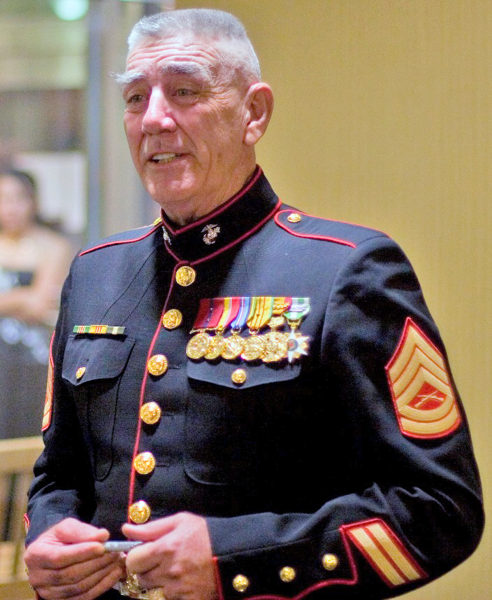
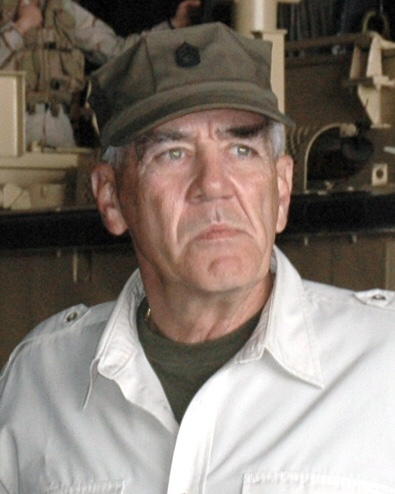
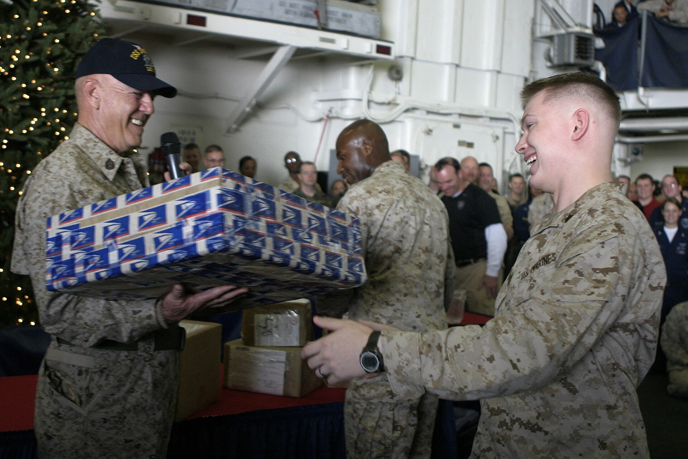

He served his country in uniform, then spent the rest of his life making sure America never forgot what that meant. The Antelope Valley claimed him as its own — and he never left.

Ronald Lee Ermey was born in Emporia, Kansas on March 24, 1944, the third of six children in a working-class family that settled outside Kansas City. By seventeen, he had been arrested twice for criminal mischief. A judge gave him a choice: serve time, or serve his country. He chose the Corps — and the Corps changed everything.
What began as an alternative to a cell became a calling. Ermey completed recruit training at Marine Corps Recruit Depot San Diego and discovered not just discipline but purpose. He would go on to serve eleven years in the United States Marine Corps, deploying to Vietnam and Okinawa, earning commendations, and ultimately becoming a Staff Sergeant and celebrated drill instructor — the most demanding and formative role the Corps has to offer.
In 1972, a combat injury ended his active service. He was medically discharged, carrying shrapnel in his back for the rest of his life. But R. Lee Ermey never truly left the Marine Corps. The Corps never truly left him.
After leaving the Corps, Ermey relocated to the Philippines, where he studied criminology and drama at the University of Manila. His first film role came as a helicopter pilot in Francis Ford Coppola's Apocalypse Now (1979), where he also served as technical advisor — a combination that would define his career.


When Stanley Kubrick began production on Full Metal Jacket in 1987, Ermey was brought on as a technical consultant. He famously auditioned himself into the lead role of Gunnery Sergeant Hartman by delivering a relentless, unscripted tirade while crew members pelted him with tennis balls — never losing composure or repeating an insult. Kubrick hired him on the spot.
The performance earned Ermey a Golden Globe nomination and the most widely recognized portrayal of a Marine drill instructor in the history of American cinema. His Gunnery Sergeant Hartman became shorthand for toughness, discipline, and uncompromising standards — values he had not invented for the role, but carried from real life into it.
Over a forty-year career, Ermey appeared in more than sixty film and television productions. From 2002 to 2009, he hosted Mail Call on the History Channel, answering viewer questions about military history with the authority of a man who had lived it. He conducted USO tours in Iraq and Afghanistan, visited recruit depots at San Diego and Parris Island, and never stopped showing up for the troops.
In 2002, Marine Corps Commandant General James L. Jones made a decision without precedent in the history of the United States Marine Corps: he honorarily promoted R. Lee Ermey to the rank of Gunnery Sergeant. Ermey is the only Marine in history to have received this distinction.
It was not a publicity gesture. It was a recognition of something the Corps understood clearly — that Ermey had spent decades embodying, teaching, and protecting what it means to be a Marine. He had done more to convey the ethos of the Corps to the American public than almost any other living person. The promotion was overdue.
Once a Marine, always a Marine. It is not a phrase. It is a fact of the soul.
— R. Lee Ermey, reflecting on his serviceFrom that day forward, R. Lee Ermey was Gunnery Sergeant Ermey — not just on screen, but in reality, in the records, and in the permanent memory of the institution he served.
R. Lee Ermey made his home in the Antelope Valley — the high desert community that sits in the shadow of Edwards Air Force Base, where test pilots push aircraft beyond their known limits and military families build their lives. It was the right place for a man like Ermey.
He co-founded Bravery Brewing Company in Lancaster, California alongside the Avery family, opening the taproom's doors on July 4, 2012 — Independence Day, deliberately chosen. The brewery became a gathering place for the community he loved: veterans, first responders, families, and anyone who understood that bravery is not just a word. His uniform from Full Metal Jacket — the Golden Globe-nominated performance that made Gunny Ermey a household name — is preserved in a glass case there as a permanent tribute to the man who helped build it.
Today, a street near Northrop Grumman's facilities bears his name — one more marker of a life that left its mark on the valley he called home.
R. Lee Ermey passed away on April 15, 2018, from complications related to pneumonia. He was 74. His death was mourned by the military community, the film industry, and the Antelope Valley in equal measure — because he had been, in truth, all of those things at once: a warrior, an artist, a neighbor, and a builder.
He is survived by his wife Nila, whom he married in 1975, and their four children. He was buried with full military honors. The Marine Corps lost one of its finest ambassadors. The Antelope Valley lost one of its most devoted sons.
The Best of America™ archive records his name here because the people of this valley deserve to know that the taproom on the corner, the street sign near the base, and the glass case holding his uniform are all markers of the same man — a Marine who came home to this desert and to the community he loved.
He served his country in uniform, then spent the rest of his life serving it in every other way he could — on screen, on stage, in the community, and at the brewery he co-founded in the desert town he loved.
— The Best of America™ National Archive“Once a Marine, always a Marine. It is not a phrase. It is a fact of the soul.”
This profile is sponsored by Bravery Brewing Co. · Lancaster, California · Founding Local Patriot Business™ · TheBestofAmerica.org